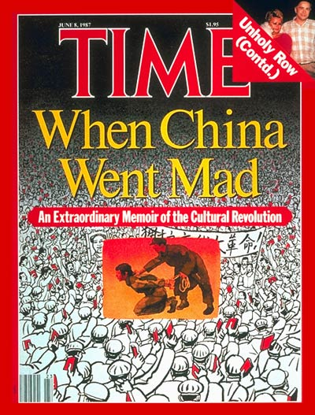
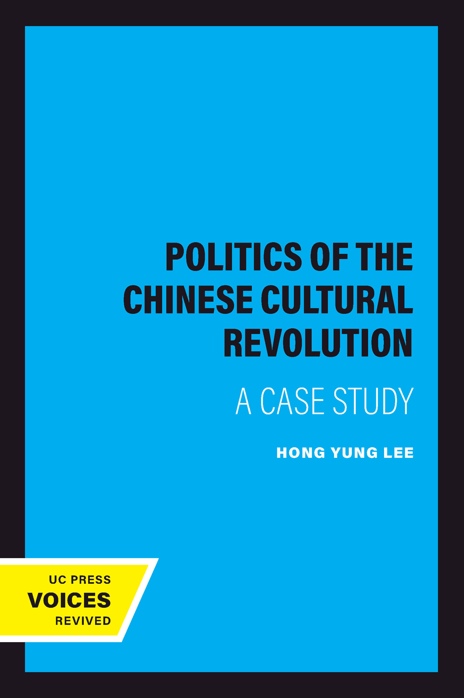
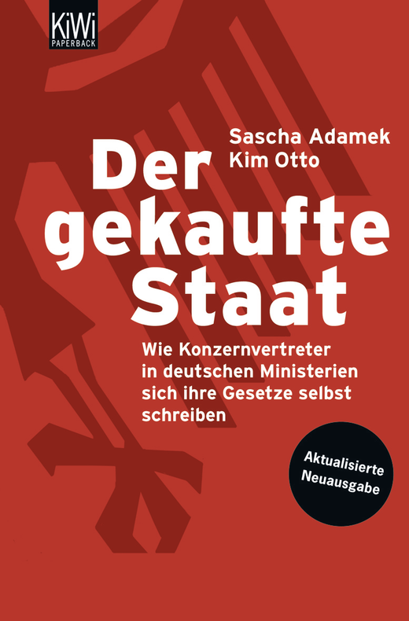
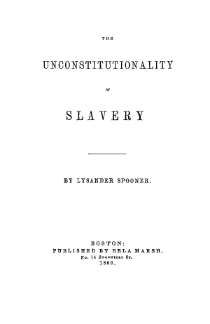

1:19:19 · 11 OPERE
Uno sguardo alla Rivoluzione Culturale.
Il filo del discorso
Il video parte dalla Rivoluzione Culturale cinese per interrogare il rapporto fra iniziativa del vertice, competizione delle élite e mobilitazione delle masse. Il principale riferimento è The Politics of the Chinese Cultural Revolution di Hong Yung Lee: attraverso letture e un diagramma politico, il relatore discute l’autonomia dei gruppi, la persecuzione degli intellettuali e i modi con cui ogni forma di dissenso può essere delegittimata. La copertina TIME del giugno 1987 introduce il tema della memoria, mentre Il processo di Kafka offre un’immagine dell’appartenenza all’apparato. Nella seconda parte il relatore trasferisce questi strumenti al presente, con giudizi polemici sulla comunicazione pandemica, sulle manifestazioni in Germania, sui rapporti fra politica e interessi economici e sulla moderazione delle piattaforme. Der gekaufte Staat e il caso Prager University contro YouTube sono i riferimenti più concreti. Le analogie con il maoismo, le accuse di collusione e l’idea di una censura statale esternalizzata restano sue interpretazioni; la decisione americana del 2020 va distinta dalla sua critica filosofica. Il finale passa dalla responsabilità dei gruppi in Niebuhr alla memoria di Palach, Morrison, Thích Quảng Đức e della divulgazione dei Pentagon Papers. La riflessione su Spooner e Fromm torna alla libertà come responsabilità personale. La scheda distingue le cronologie corrette dalle imprecisioni del parlato e tratta il caso di cronaca di Rende senza attribuire cause, diagnosi o motivazioni non accertate. Il ricordo delle proteste estreme è contestualizzato storicamente, senza proporle come modello.
I libri nel discorso

TIME, 8 giugno 1987: When China Went Mad — An Extraordinary Memoir of the Cultural Revolution
TIME · copertina del fascicolo 8 giugno 1987: TIME · copertina del fascicolo 8 giugno 1987
Copertina autentica di questo preciso fascicolo, completa di testata e data; non copertina del memoir da cui la rivista pubblicò un estratto.
Riferimento ricavato dalla trascrizione automatica.
Passaggio 0:57 ↗ · Fonti e libro ↗
The Politics of the Chinese Cultural Revolution: A Case Study
UC Press · Voices Revived · ISBN 9780520310148: UC Press · Voices Revived · ISBN 9780520310148
Copertina autentica della ristampa Voices Revived, non identificazione dell’esemplare mostrato. Il catalogo dell’editore data l’opera al gennaio 1978.
Riferimento ricavato dalla trascrizione automatica.
Passaggio 11:53 ↗ · Fonti e libro ↗
Il processo
Copertina: Adelphi · gli Adelphi, 2020 · edizione di riferimento
Riferimento ricavato dalla trascrizione automatica.
Passaggio 29:12 ↗ · Fonti e libro ↗
Der gekaufte Staat. Wie Konzernvertreter in deutschen Ministerien sich ihre Gesetze selbst schreiben
KiWi · edizione aggiornata 2009 · ISBN 9783462040999: KiWi · edizione aggiornata 2009 · ISBN 9783462040999
Immagine ufficiale completa del tascabile aggiornato 2009; l’identità dell’edizione materiale nel video resta da controllare. Non confondere con Gekaufte Journalisten di Ulfkotte.
Riferimento ricavato dalla trascrizione automatica.
Passaggio 40:58 ↗ · Fonti e libro ↗
Prager University v. Google LLC e YouTube LLC, No. 18-15712
Prima pagina della sentenza: Prager, 2020: Prima pagina originale dell’opinion del Ninth Circuit del 26 febbraio 2020, No. 18-15712, fascicolo ufficiale di 16 pagine. Non è una monografia né una sentenza della Corte Suprema.
Rendering integrale della pagina iniziale del PDF ufficiale, con corte, parti, numero, data e collegio. La scheda distingue l’opinion dal riassunto di servizio delle pagine successive, che dichiara di non far parte della decisione. Nessun editore commerciale o ISBN inventato.
Nel passaggio: Prager University, causa contro YouTube, Nono circuito e 2020 nominati; discusso il requisito della natura pubblica/statale della piattaforma. Il caso viene riferito attraverso un articolo giornalistico; data completa e numero del procedimento non pronunciati.
Passaggio 49:07 ↗ · Fonti e libro ↗
Costituzione degli Stati Uniti d’America
Copertina della raccolta: Testo firmato il17settembre1787. Per l’immagine si usa la raccolta Penguin Classics The Federalist Papers, ISBN 9780140444957, che dichiara di includere il testo della Costituzione; non è una fotografia della pergamena originaria.
Copertina autentica di The Federalist Papers: la descrizione editoriale attesta che la raccolta comprende il testo completo della Costituzione. Non è il frontespizio costituzionale del 1787 e Hamilton, Madison e Jay non sono presentati come unici autori del documento.
Riferimento ricavato dalla trascrizione automatica.
Passaggio 49:13 ↗ · Fonti e libro ↗
La Repubblica
Identificazione probabile
Copertina: Laterza · La Repubblica · edizione con testo a fronte di riferimento
Immagine associata all’ISBN di riferimento e controllata visivamente; edizione e traduzione non identificate come quelle citate o lette nel video.
Riferimento ricavato dalla trascrizione automatica.
Passaggio 53:15 ↗ · Fonti e libro ↗
Uomo morale e società immorale
Copertina: Jaca Book · Figure del pensiero moderno
Riferimento ricavato dalla trascrizione automatica.
Passaggio 1:05:02 ↗ · Fonti e libro ↗
Pentagon Papers (Report of the Office of the Secretary of Defense Vietnam Task Force)
Prima pagina del fascicolo introduttivo e indice: Rapporto finale del 1969 · fascicolo introduttivo e indice · scansione NARA declassificata nel 2011
Prima pagina del fascicolo introduttivo e indice conservato dai National Archives; non è la copertina di un libro e non riproduce l’intero rapporto. La voce riguarda il corpus documentario.
Riferimento ricavato dalla trascrizione automatica.
Passaggio 1:10:58 ↗ · Fonti e libro ↗
The Unconstitutionality of Slavery
Liberty Fund · frontespizio autentico della prima parte, Boston 1860: Liberty Fund · frontespizio autentico della prima parte, Boston 1860
Frontespizio dell’edizione Bela Marsh 1860 della prima parte, non copertina esterna né prima edizione 1845. L’immagine è pubblicata dalla biblioteca che offre anche il facsimile originale.
Riferimento ricavato dalla trascrizione automatica.
Passaggio 1:13:51 ↗ · Fonti e libro ↗
Fuga dalla libertà
Copertina: Mondadori, 2022
Riferimento ricavato dalla trascrizione automatica.
Passaggio 1:16:24 ↗ · Fonti e libro ↗